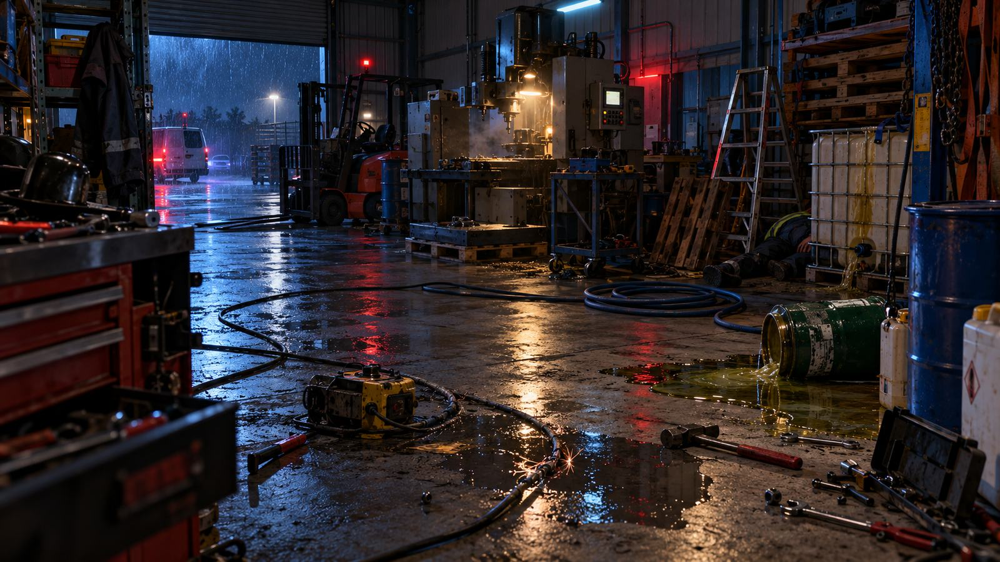

Bei einer Inventur in einer stillgelegten Rettungswache wird ein alter Defibrillator gefunden. Gerätekennung: AED 13.
Der letzte Einsatzdatensatz wurde nie vollständig abgeschlossen. Im Speicher liegen beschädigte Zeitmarken, Bildfragmente, kurze Audioaufzeichnungen und ein unvollständiges AED-Protokoll.
Was ist in dieser Nacht passiert?
Rekonstruiert den Einsatz. Nicht Geschwindigkeit entscheidet zuerst, sondern die Qualität eurer Entscheidungen.
Ab diesem Moment läuft die Spielzeit. Der Stand wird lokal auf diesem Gerät gespeichert.
FRAGMENT 01 · STANDBILD
00:47:16 – Einsatzort rekonstruieren
Fundlage: Im AED-Speicher liegt ein einzelnes komprimiertes Bild des damaligen Einsatzortes. Es zeigt die Situation kurz vor dem Patientenkontakt. Nicht alles, was auffällt, ist gleich wichtig.
AUFTRAG
Erkundet das Bild und entscheidet, was den Einsatzablauf tatsächlich beeinflusst.
Tippt alle sieben markierten Stellen an. Danach ordnet ihr die Konsequenzen in drei Bereiche: Gefahr zuerst beherrschen, parallel möglich oder erst nach Freigabe.
REKONSTRUIERTES STANDBILD · 00:47:16

Bildfragment: Tippt eine markierte Stelle an, um die rekonstruierten Informationen zu öffnen.
0/7 Bildstellen untersucht
Einsatzplan gesperrt. Untersucht zuerst alle sieben Bildstellen. So kann keine zentrale Gefahrenquelle übersprungen werden.
EINSATZPLAN
Was folgt aus euren Beobachtungen?
Karte antippen → Bereich antippen. Bereits abgelegte Karten können wieder herausgenommen werden.
⚠ GEFAHR ZUERST BEHERRSCHEN
↔ PARALLEL MÖGLICH
⏳ ERST NACH FREIGABE
CORE TEST 1 ABGESCHLOSSEN
Fragment 01 stabil abgeschlossen.
Dieser Teststand enthält bewusst nur Story, Audio/HUD, Wiederaufnahme und Station 1. Station 2 und 3 sind technisch nicht enthalten.
⏸ PAUSE
Spiel- und Wertungszeit sind angehalten. Audio ist gestoppt.
DATENSATZ WIEDERHERGESTELLT
19 %
FRAGMENT 01 GESICHERT
Der saubere Kern ist abgeschlossen. Für diesen Techniktest endet die Rekonstruktion hier bewusst.